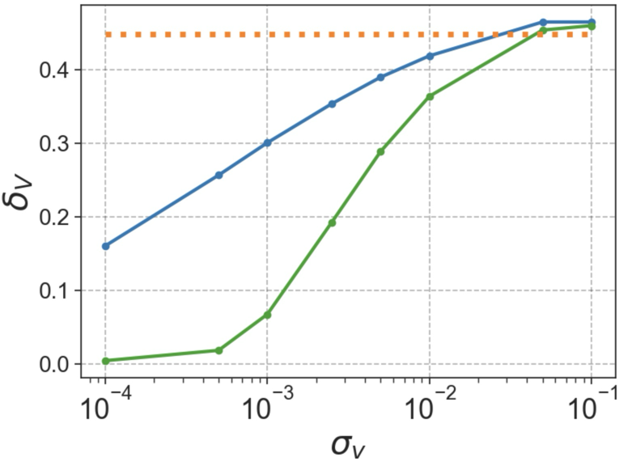
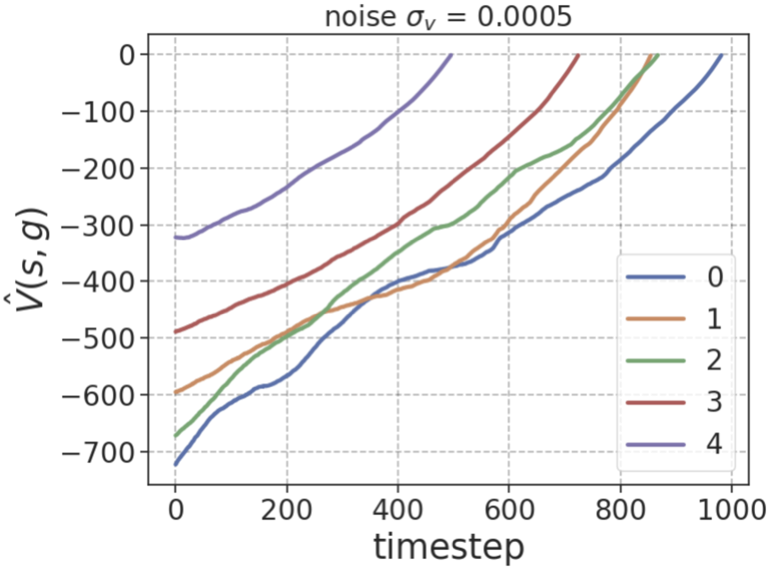
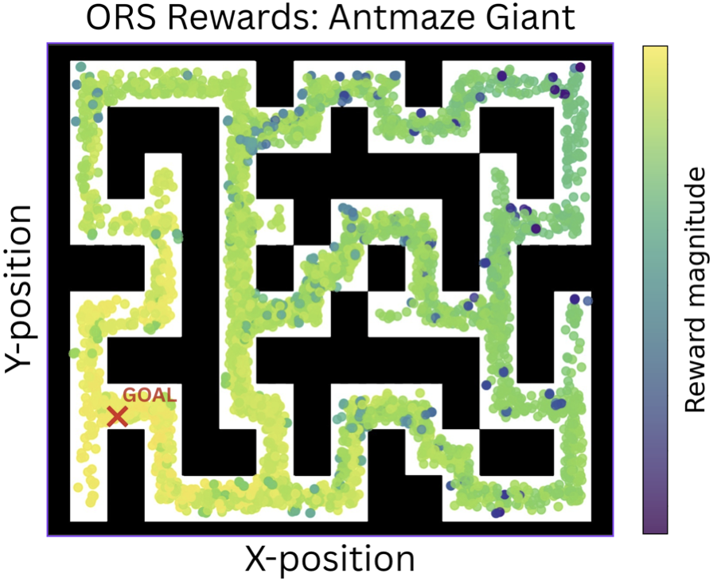

Occupancy Reward Shaping: Improving Credit Assignment for Offline Goal-Conditioned RL
ORS learns the occupancy measure (distribution of future states) and extracts goal-reaching information into a reward function such that states with future states closer to goal have higher rewards.
Standard GCRL uses reward \(r(s) = \mathbf{1}\{s=g\}\) — non-zero only at the goal. This triggers a cascade: sparse rewards → noisy value functions → bad policies → ineffective GCRL. Prior reward shaping methods either require per-task manual design or rely on local classifiers that miss long-range temporal structure.
A discounted occupancy model \(d^\pi(s^+ \mid s, a)\) aggregates all future states reachable from \((s,a)\) under policy \(\pi\), weighted by temporal distance. States near goal \(g\) have occupancies that concentrate around \(g\); states far away have diffuse, spread-out occupancies. This geometric structure is exactly what credit assignment needs — and it emerges for free from the world model.
The discounted occupancy measure is:
\[ d^\pi(s^+ \mid s, a) = (1 - \gamma) \sum_{\Delta t=1}^{\infty} \gamma^{\Delta t - 1} \mathbb{P}(s_{t + \Delta t} = s^+ \mid s, a, \pi) \]Analogous to SARSA bootstrapping \(Q(s,a) = r(s,a,s') + \gamma Q(s',a')\), we bootstrap occupancy learning over offline data \(\mathcal{D}\):
\[ d_\theta^{\pi_\mathcal{D}}(s^+ \mid s, a) = (1-\gamma) p(s' \mid s, a) + \gamma d_{\theta^-}^{\pi_\mathcal{D}}(s^+ \mid s', a'); \quad \forall (s, a, s', a') \in \mathcal{D} \]We parameterize the occupancy model using flow matching [Farebrother et al., 2025], learning a velocity field \(v_\theta(t, s, a, x_t)\):
\[ \mathcal{L}_{\text{flow}}(\theta) = (1-\gamma)\mathcal{L}_{\text{next}} + \gamma \mathcal{L}_{\text{future}} \]where \(\mathcal{L}_{\text{next}}\) matches the immediate next state and \(\mathcal{L}_{\text{future}}\) bootstraps long-horizon occupancy with a target network.
Intuition: States closer to goal \(g\) occupy inner level-set layers (layer \(k_0\)) around \(g\), while distant states lie in outer layers (\(k_1, k_2, k_3\ldots\)). The \(W_2^2\) distance grows monotonically with layer index \(k\) — making it a natural dense credit signal.
The flow-matching loss provides a tractable upper bound on \(W_2^2\) [Haviv et al., 2025; Lv et al., 2025; Park et al., 2025]:
\[ W_2^2(\delta_g, d^{\pi_\mathcal{D}}(s^+ \mid s, a)) \leq \mathbb{E}_{\substack{x_1 = g,\, x_0 \sim \mathcal{N}(0, I) \\ t \sim \mathcal{U}(0,1)}} \left[\| v_\theta(t, s, a, x_t) - (x_1 - x_0) \|_2^2 \right] \]The ORS reward \(r^W(s,a,g)\) is learned by regressing this flow-matching loss:
\[ \mathcal{L}_{\text{rew}}(\psi) = \mathbb{E}_{s,a,g \sim \mathcal{D}} \left\| r^W_\psi(s,a,g) + \mathbb{E}_{\substack{x_1=g,\, x_0 \sim \mathcal{N}(0,I) \\ t \sim \mathcal{U}([0,1])}} \|v_\theta(t,s,a,x_t) - (x_1-x_0)\|_2^2 \right\|_2^2 \]We evaluate ORS on 13 sparse-reward tasks of varying dataset quality and task complexity from 4 categories of OGBench datasets — antmaze, cube, scene and puzzle.
| Dataset | GCBC | GC-IVL | QRL | CRL | GC-IQL | HIQL | SAW | SMORE | n-step | GCIQL-OTA | Go-Fresh | ORS (ours) |
|---|---|---|---|---|---|---|---|---|---|---|---|---|
| antmaze-large-navigate | 25±3 | 18±3 | 64±18 | 90±4 | 34±4 | 91±2 | 86±5 | 22±5 | 53±9 | 90±4 | 88±3 | 88±7 |
| antmaze-giant-navigate | 0±0 | 0±0 | 9±4 | 39±8 | 0±0 | 72±7 | 48±9 | 1±1 | 1±1 | 26±5 | 30±10 | 56±9 |
| cube-double-play | 1±1 | 36±3 | 1±0 | 10±2 | 40±5 | 6±2 | 40±7 | 2±2 | 4±3 | 3±2 | 17±6 | 45±7 |
| cube-triple-play | 0±0 | 1±1 | 0±0 | 6±3 | 7±3 | 3±2 | 6±6 | 0±0 | 1±1 | 2±2 | 18±5 | 37±8 |
| puzzle-4x4-play | 0±0 | 13±2 | 0±0 | 0±0 | 26±3 | 7±2 | 17±12 | 0±0 | 46±5 | 85±4 | 74±6 | 70±5 |
| puzzle-4x5-play | 0±0 | 7±1 | 0±0 | 1±0 | 14±1 | 8±4 | 8±4 | 0±0 | 5±2 | 19±1 | 20±1 | 20±0 |
| puzzle-4x6-play | 0±0 | 10±2 | 0±0 | 4±1 | 12±1 | 3±1 | 8±4 | 0±0 | 14±3 | 15±3 | 17±4 | 20±2 |
| scene-play | 5±1 | 42±4 | 5±1 | 19±2 | 51±4 | 38±3 | 63±6 | 8±2 | 26±7 | 42±7 | 56±10 | 80±4 |
| antmaze-large-explore | 0±0 | 8±6 | 0±0 | 0±0 | 1±1 | 0±0 | 15±8 | 0±0 | 0±0 | 0±0 | 38±10 | 22±7 |
| cube-triple-noisy | 1±1 | 9±1 | 1±0 | 3±1 | 2±1 | 2±1 | 0±0 | 1±1 | 2±1 | 2±1 | 5±4 | 22±7 |
| puzzle-4x4-noisy | 0±0 | 20±3 | 0±0 | 0±0 | 29±7 | 3±3 | 3±3 | 0±0 | 0±0 | 0±0 | 50±5 | 56±7 |
| puzzle-4x6-noisy | 0±0 | 17±2 | 0±0 | 6±3 | 18±2 | 2±1 | 8±6 | 0±0 | 12±6 | 15±3 | 19±4 | 19±1 |
| scene-noisy | 1±1 | 26±5 | 9±1 | 1±1 | 26±2 | 25±4 | 33±6 | 3±2 | 2±2 | 3±2 | 34±5 | 40±5 |
| Mean | 2.5 | 15.9 | 6.9 | 13.7 | 20.0 | 20.0 | 25.8 | 2.8 | 12.7 | 23.2 | 35.8 | 44.2 |



Left: ORS leads to lower average value non-monotonicity \(\delta_V\) at lower noise levels \((\sigma_v)\) over expert trajectories compared to sparse rewards or using \(\hat{V}(s,g) = r_W(s,g)\) directly. Center: ORS induces less noisy estimates of \(\hat{V}(s,g)\) over expert trajectories even for long horizons. Right: ORS rewards over 5000 state-action pairs for a single fixed goal smoothly decay in magnitude with temporal distance from goal. All plots computed over antmaze-giant-navigate.
If you find this work useful, please cite:
@inproceedings{venugopal2026ors,
title = {Occupancy Reward Shaping: Improving Credit Assignment
for Offline Goal-Conditioned RL},
author = {Aravind Venugopal and Jiayu Chen and Xudong Wu and
Chongyi Zheng and Benjamin Eysenbach and Jeff Schneider},
booktitle = {International Conference on Learning Representations},
year = {2026},
url = {https://openreview.net/forum?id=EW8DskWQ1K}
}